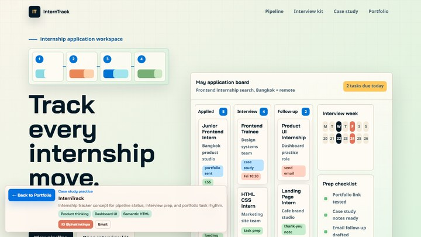
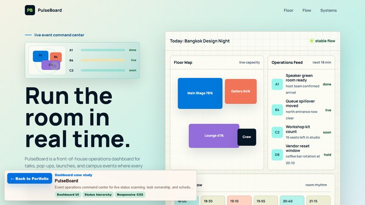
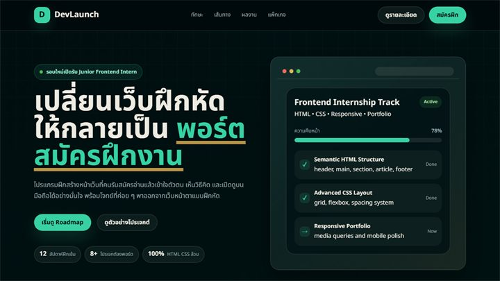
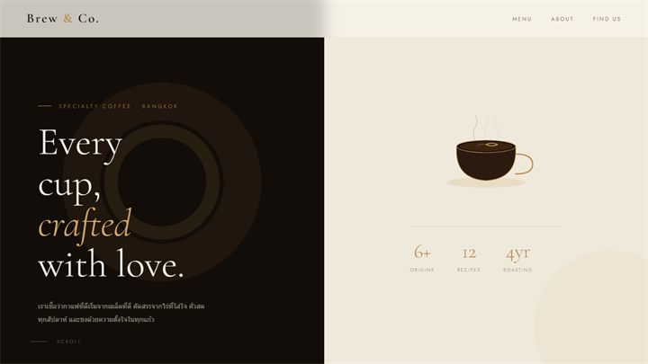
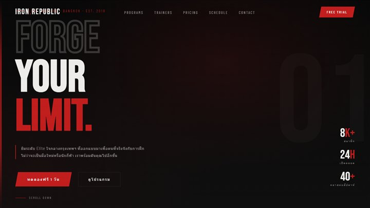
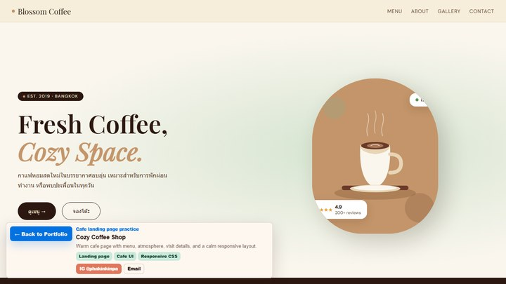

LaunchLedger
01Startup budget dashboard concept for runway, spend planning, and launch decision queues.
หน้าแรกของโฟลเดอร์พอร์ตนี้ รวมทุกไฟล์ HTML
ให้เป็นภาพปกเดียว เปิดดูงานได้ทันที
และยังคงไฟล์เดิมไว้ครบ.
กดที่ภาพใหญ่หรือรายการด้านขวาเพื่อเข้าเว็บเต็มหน้าของแต่ละไฟล์ได้ทันที. หน้าแรกนี้จึงเป็นทั้งภาพปกและประตูเข้าโปรเจกต์จริง.

InternTrack InternTrack.html เปิดเว็บ
PulseBoard PulseBoard.html เปิดเว็บ
DevLaunch Academy intern_landing_page_html_css.html เปิดเว็บ
Brew & Co. Brew & Co..html เปิดเว็บ
Iron Republic gym-landing.html เปิดเว็บ NOIR Coffee coffee-landing.html เปิดเว็บแต่ละงานมีทางเข้าเว็บจริงและลิงก์ไฟล์ source แยกกัน เพื่อให้ดูผลงานและตรวจโค้ดได้ง่าย.
Startup budget dashboard concept for runway, spend planning, and launch decision queues.
Digital gallery landing page concept with CSS art direction, exhibit cards, and visit flow.
Internship application tracker concept for pipeline status, interview prep, and follow-up rhythm.
Event operations dashboard concept with live floor status, task ownership, and schedule rhythm.
Landing page ภาษาไทยสำหรับหลักสูตรฝึก frontend พร้อมโทน tech ที่จริงจัง.
Gym landing page concept with high-contrast art direction, programs, pricing, schedule, and trial signup.
หน้า coffee brand โทนอุ่น เน้นเมนู บรรยากาศร้าน และภาพลักษณ์ specialty.
คาเฟ่โทนมืด เน้นอารมณ์พรีเมียมและจังหวะ visual แบบ cinematic.
งานทดลองโทน neon, ticker, contrast สูง และบุคลิกที่แตกต่างจากงานคาเฟ่ทั่วไป.

หน้า landing page คาเฟ่ในโทนอบอุ่น มีเมนู บรรยากาศร้าน และส่วนติดต่อครบ.
สรุปตัวตน ทักษะ เครื่องมือ และช่องทางติดต่อสำหรับ hiring reviewer, teacher, หรือคนที่อยากดูพัฒนาการ frontend จากงานจริงใน repo นี้.
I build static HTML pages as complete portfolio pieces: clear first screens, responsive CSS, real screenshots, readable source, and live pages that open directly from GitHub Pages.
A learning-forward frontend portfolio focused on HTML, CSS, responsive layout, dashboard concepts, and landing pages that can be reviewed from both design and code.
Frontend intern, junior web designer, or landing page practice reviewer.
InternTrack for product thinking, PulseBoard for dashboard hierarchy, and DevLaunch Academy for Thai landing-page communication.
Three focused pieces with the thinking behind the UI: what the page needed to solve, which choices shaped it, and what frontend skills each project practiced.
Challenge: help students track internship applications, interview steps, follow-ups, and portfolio tasks in one calm screen instead of scattered notes.
Applied, interview, and follow-up lanes make progress readable without forcing visitors into a dense table.
Calendar and checklist panels sit beside the application board so prep work feels connected to each opportunity.
The concept links follow-ups, case-study notes, and screenshot polish to the same rhythm as job applications.
Challenge: design a single-screen command center where event staff can scan crowd flow, ownership, and timeline pressure without reading a long report.
Large floor signals and color-coded states make the most urgent room conditions visible before the details.
Activity rows pair each event update with a responsible role so the dashboard feels actionable.
Panels, rhythm, and spacing keep the interface information-rich while still easy to scan.
Challenge: present a Thai frontend learning track in a way that feels structured, trustworthy, and easy for a beginner to understand before applying.
The page explains the offer in familiar Thai while keeping action labels and section flow recruiter-friendly.
Learning steps and project outcomes come before plan choices, so visitors understand the value first.
Hero, dashboard mockup, roadmap, showcase, pricing, and form sections practice a full landing-page IA.
Frontend and landing page practice portfolio focused on static HTML, responsive CSS, visual direction, and polished project presentation.
โครงนี้ทำให้โฟลเดอร์กลายเป็นพอร์ตแบบเปิดแล้วเห็นภาพทันที: `index.html` เป็นหน้าปก ส่วนไฟล์งานเดิมยังเป็นหน้าเดี่ยวที่แชร์หรือเปิดแยกได้.
ใช้เป็นหน้าแรกของ repo หรือโฟลเดอร์ portfolio.
ภาพปกย่อช่วยให้เห็นสไตล์ของแต่ละไฟล์ก่อนคลิก.
เมื่องานเพิ่ม ก็เพิ่มการ์ดใหม่ในส่วนไฟล์ทั้งหมด.